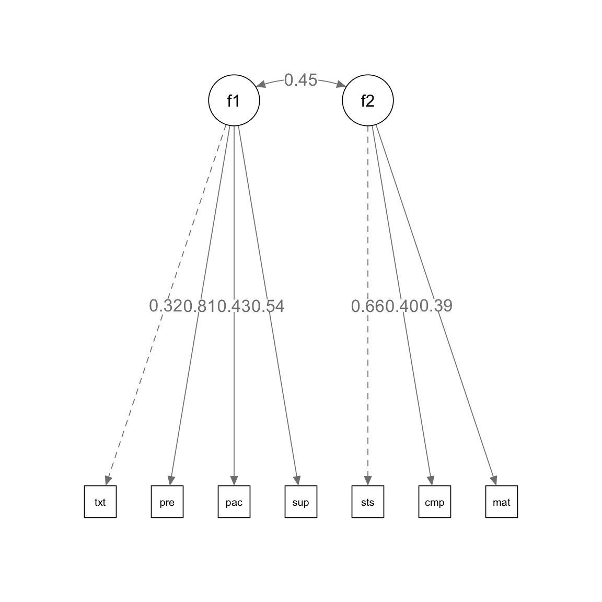
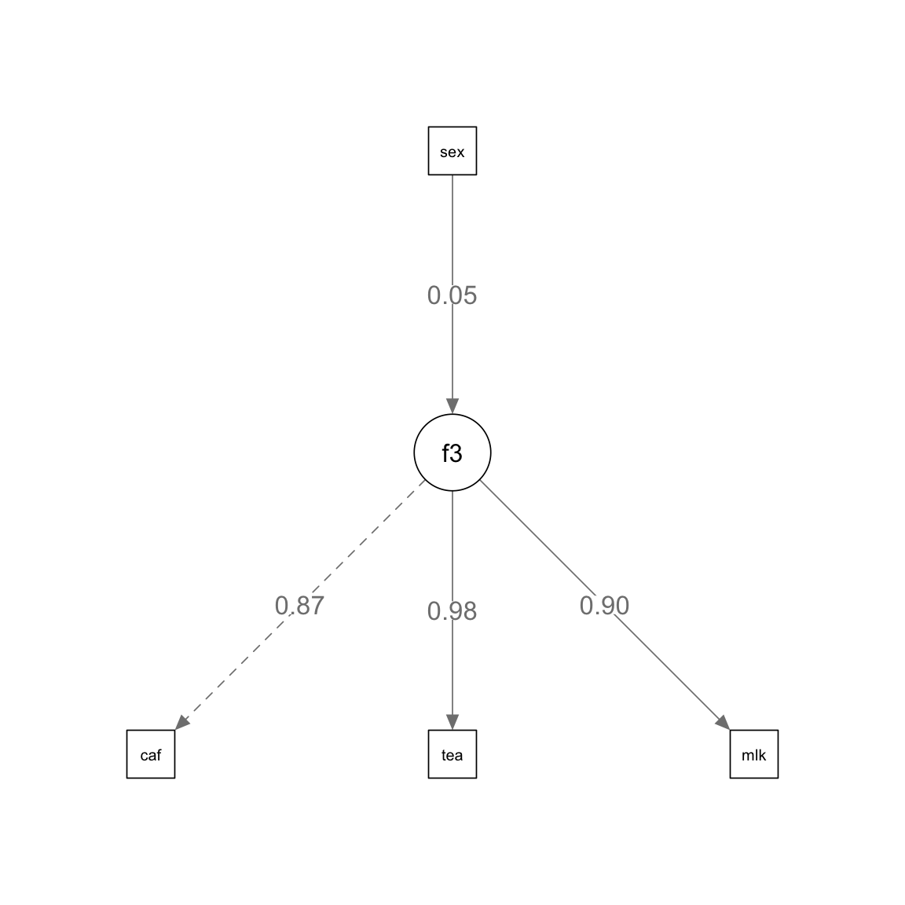
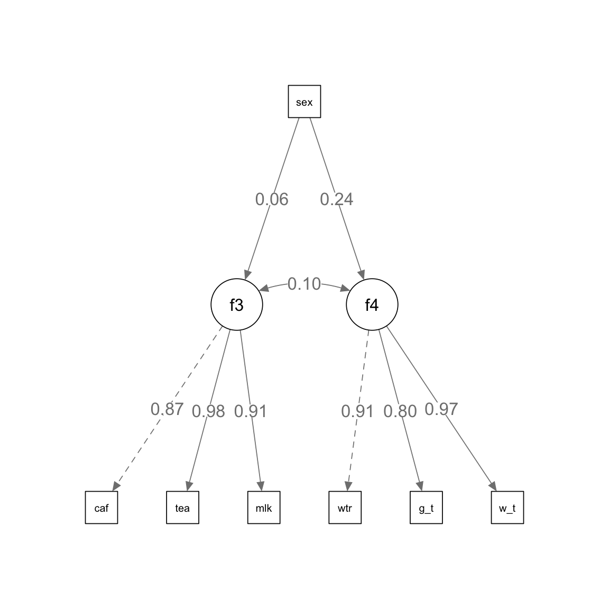

pacman::p_load(tidyverse, lavaan)12日目 : 構造方程式モデル
SEMについて
構造方程式モデル(Structural Equation Modeling: SEM)とは，線形回帰や因子分析といった分析手法を一般化して体系化したものです。 以前は共分散構造分析と呼ばれていましたが，共分散や分散を中心に扱う手法ではないため、最近は構造方程式モデルやSEMと呼ばれることが多いです。 またSEMの世界では，
- 回帰分析を構造方程式
- 因子分析を測定方程式
というらしいです。
パス図
変数の因果関係や相互関係を図で表したものであり，基本的に研究者が仮説や設定として事前に用意しておくものです。 つまり探索的な因子分析とは異なり，潜在変数(共通因子)から影響を受ける要素を事前に想定したモデルとなります。 パス図の表現するルールとして，
- 四角形：観測変数 データにあるもの
- 楕円：潜在変数(因子) データにないもの
- 小さい円：誤差
- 一方向の矢印：影響の方向（因果関係?）
- 両方向の矢印：共分散や相関
分析
RでSEMを行う場合に事実上の標準となっているパッケージがlavaanです。 まずいつものtidyverseと今回利用するlavaanを読み込みます。
ここでは，Rで構造方程式モデル推定を勉強のためのバイブルである豊田 (2014)「共分散構造分析 R編」東京図書のデータを用いる。 データはこのテキストの資料配付サイトから入手できる。
df <- read_csv("data/seminar.csv")New names:
Rows: 118 Columns: 8
── Column specification
────────────────────────────────────────────────────────
Delimiter: "," chr (1): ...1 dbl (7): テキスト, プレゼン, ペース, 講師対処,
満足度, 理解度, 目的一致
ℹ Use `spec()` to retrieve the full column specification for this data. ℹ
Specify the column types or set `show_col_types = FALSE` to quiet this message.
• `` -> `...1`このデータは，セミナーにおける「充実感」と「講師の質」を調査するためのデータであり，
- テキストの良さ
text - プレゼンの良さ
pre - ペースの適切さ
pace - 講師の対処の良さ
sup - セミナーへの満足度
satis - 理解度
comp - 目的一致
mat
から構成されている。上の4つは「講師の質」を表し，下の3つは「本人の充実度」を表しそうである。
最初に，変数を定義する。 lavaanでモデルを設定するための記法は
-
=~：右辺の要素から左辺の共通因子を推定する因子分析モデル -
~：右辺を左辺で回帰する回帰モデル -
~~：左辺と右辺の相関関係
となっている。これを'で囲むことでモデルの指定ができる。
model1 <- ' # 因子分析
f1 =~ text + pre + pace + sup
f2 =~ satis + comp + mat
#f2 ~~ f1
'上記で構築したmodel1をlavaanのsem()関数で推定する。
fit <- cfa(
model = model1,
data = df,
estimator = "ML")推定結果を結果をsummary() で表示する。
summary(object = fit, standardize = TRUE)lavaan 0.6-19 ended normally after 44 iterations
Estimator ML
Optimization method NLMINB
Number of model parameters 15
Number of observations 118
Model Test User Model:
Test statistic 14.992
Degrees of freedom 13
P-value (Chi-square) 0.308
Parameter Estimates:
Standard errors Standard
Information Expected
Information saturated (h1) model Structured
Latent Variables:
Estimate Std.Err z-value P(>|z|) Std.lv Std.all
f1 =~
text 1.000 0.327 0.320
pre 2.247 0.837 2.685 0.007 0.736 0.814
pace 1.550 0.615 2.522 0.012 0.508 0.426
sup 1.855 0.680 2.727 0.006 0.607 0.538
f2 =~
satis 1.000 0.931 0.659
comp 0.570 0.250 2.282 0.022 0.530 0.402
mat 0.385 0.170 2.261 0.024 0.358 0.390
Covariances:
Estimate Std.Err z-value P(>|z|) Std.lv Std.all
f1 ~~
f2 0.138 0.068 2.025 0.043 0.453 0.453
Variances:
Estimate Std.Err z-value P(>|z|) Std.lv Std.all
.text 0.942 0.128 7.335 0.000 0.942 0.898
.pre 0.275 0.131 2.099 0.036 0.275 0.337
.pace 1.160 0.167 6.929 0.000 1.160 0.818
.sup 0.905 0.149 6.060 0.000 0.905 0.711
.satis 1.127 0.381 2.955 0.003 1.127 0.565
.comp 1.463 0.230 6.364 0.000 1.463 0.839
.mat 0.716 0.111 6.465 0.000 0.716 0.848
f1 0.107 0.071 1.505 0.132 1.000 1.000
f2 0.866 0.412 2.103 0.035 1.000 1.000推定結果から，パス図を作成するために，semPlotパッケージを用いる。
pacman::p_load(semPlot)
semPaths(
fit,
what = "paths",
whatLabels = "std",
edge.label.cex = 1.2,
residuals = FALSE,
intercepts = FALSE)
課題
以前利用した，飲み物の好みについてのアンケート調査データを用いて，構造方程式を構築し，推定する。
df2 <- read_csv("data/chap14.csv") # 飲み物のデータRows: 20 Columns: 8
── Column specification ────────────────────────────────────────────────────────
Delimiter: ","
dbl (8): ID, café, tea, milk, water, g_tea, w_tea, sex
ℹ Use `spec()` to retrieve the full column specification for this data.
ℹ Specify the column types or set `show_col_types = FALSE` to quiet this message.資料に示されたパス図をもとに，モデルを構築し，推定する。
# モデルの指定
model2 <- "
f3 =~ cafe + tea + milk
f3 ~ sex
"
# 構造方程式モデル
fit2 <- sem(
model2, # モデル
data = df2, # データ
auto.var = TRUE # 自動的に共分散を推定
)
summary(fit2, standardized = TRUE) # 結果表示lavaan 0.6-19 ended normally after 33 iterations
Estimator ML
Optimization method NLMINB
Number of model parameters 7
Number of observations 20
Model Test User Model:
Test statistic 18.780
Degrees of freedom 2
P-value (Chi-square) 0.000
Parameter Estimates:
Standard errors Standard
Information Expected
Information saturated (h1) model Structured
Latent Variables:
Estimate Std.Err z-value P(>|z|) Std.lv Std.all
f3 =~
cafe 1.000 0.929 0.868
tea 1.106 0.164 6.739 0.000 1.028 0.984
milk 0.785 0.132 5.934 0.000 0.729 0.905
Regressions:
Estimate Std.Err z-value P(>|z|) Std.lv Std.all
f3 ~
sex 0.102 0.429 0.238 0.812 0.110 0.054
Variances:
Estimate Std.Err z-value P(>|z|) Std.lv Std.all
.cafe 0.284 0.107 2.655 0.008 0.284 0.247
.tea 0.034 0.072 0.470 0.639 0.034 0.031
.milk 0.118 0.052 2.283 0.022 0.118 0.182
.f3 0.861 0.355 2.424 0.015 0.997 0.997推定結果からパス図を作成する。
semPaths(
fit2, # 推定結果
what = "paths", # パス図
whatLabels = "std", # 標準化係数
edge.label.cex = 1.2, # ラベルのサイズ
residuals = FALSE, # 残差を表示しない
intercepts = FALSE # 切片を表示しない
)
さらに，複雑なパス図に基づいて次のようにモデルを構築する。
# モデルの指定
model3 <- ' # sem
f3 =~ cafe + tea + milk
f4 =~ water + g_tea + w_tea
f3 ~ sex
f4 ~ sex
'上記のモデルを推定し，作図する。
# モデル推定
fit3 <- sem(
model3, # モデル
data = df2, # データ
auto.var = TRUE # 自動的に共分散を推定
)
# 結果表示
summary(
fit3, # 推定結果
standardized = TRUE # 標準化係数を表示
)lavaan 0.6-19 ended normally after 33 iterations
Estimator ML
Optimization method NLMINB
Number of model parameters 15
Number of observations 20
Model Test User Model:
Test statistic 23.059
Degrees of freedom 12
P-value (Chi-square) 0.027
Parameter Estimates:
Standard errors Standard
Information Expected
Information saturated (h1) model Structured
Latent Variables:
Estimate Std.Err z-value P(>|z|) Std.lv Std.all
f3 =~
cafe 1.000 0.930 0.868
tea 1.104 0.164 6.749 0.000 1.027 0.983
milk 0.785 0.132 5.954 0.000 0.730 0.906
f4 =~
water 1.000 0.914 0.909
g_tea 0.838 0.169 4.972 0.000 0.766 0.803
w_tea 1.106 0.160 6.917 0.000 1.011 0.969
Regressions:
Estimate Std.Err z-value P(>|z|) Std.lv Std.all
f3 ~
sex 0.106 0.430 0.247 0.805 0.114 0.056
f4 ~
sex 0.450 0.417 1.079 0.280 0.493 0.241
Covariances:
Estimate Std.Err z-value P(>|z|) Std.lv Std.all
.f3 ~~
.f4 0.086 0.193 0.448 0.654 0.105 0.105
Variances:
Estimate Std.Err z-value P(>|z|) Std.lv Std.all
.cafe 0.282 0.106 2.652 0.008 0.282 0.246
.tea 0.036 0.071 0.505 0.613 0.036 0.033
.milk 0.117 0.051 2.274 0.023 0.117 0.180
.water 0.175 0.093 1.891 0.059 0.175 0.173
.g_tea 0.323 0.115 2.811 0.005 0.323 0.355
.w_tea 0.065 0.093 0.704 0.482 0.065 0.060
.f3 0.863 0.355 2.427 0.015 0.997 0.997
.f4 0.786 0.305 2.581 0.010 0.942 0.942# パス図
semPaths(
fit3, # 推定結果
what = "paths", # パス図
whatLabels = "std", # 標準化係数
fit.measures = TRUE, # 適合度指標
edge.label.cex = 1.2, # ラベルのサイズ
residuals = FALSE, # 残差を表示しない
intercepts = FALSE # 切片を表示しない
) Warning in qgraph::qgraph(Edgelist, labels = nLab, bidirectional = Bidir, : The
following arguments are not documented and likely not arguments of qgraph and
thus ignored: fit.measures